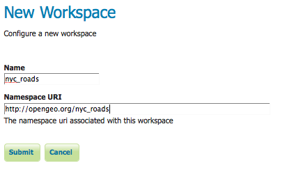
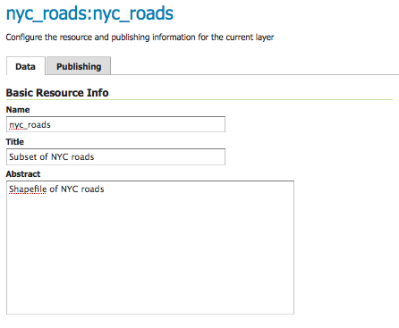

Publishing a Shapefile¶
This tutorial walks through the steps of publishing a Shapefile with GeoServer.
Note
This tutorial assumes that GeoServer is running at http://localhost:8090/geoserver/web.
Getting Started¶
Download the file nyc_roads.zip. This archive contains a Shapefile of roads from New York City that will be used during in this tutorial.
Unzip the nyc_roads.zip. The extracted folder nyc_roads contains the following four files:
nyc_roads.shp nyc_roads.shx nyc_roads.dbf nyc_roads.prj
#. Move the nyc_roads folder into <GEOSERVER_DATA_DIR>/data, where <GEOSERVER_DATA_DIR> is the root of the GeoServer data directory. If no changes have been made to the GeoServer file structure, the path is geoserver/data_dir/data/nyc_roads.
Create a New Workspace¶
The first step is to create a workspace for the Shapefile. A workspace is a container used to group similar layers together.
In a web browser navigate to http://localhost:8080/geoserver/web.
Log into GeoServer as described in Logging In.
Navigate to Data‣Workspaces.

Workspaces page
To create a new workspace click the Add new workspace button. You will be prompted to enter a workspace Name and Namespace URI.

Configure a New Worksapce
Enter the Name as nyc_roads and the Namespace URI as http://opengeo.org/nyc_roads. A workspace name is a identifier describing your project. It must not exceed ten characters or contain spaces. A Namespace URI (Uniform Resource Identifier) is typically a URL associated with your project, perhaps with an added trailing identifier indicating the workspace.
NYC Roads Workspace
Click the Submit button. The nyc_roads workspace will be added to the Workspaces list.
Create a Data Store¶
Navigate to Data‣Stores.
In order to add the nyc_roads Shapefile, you need to create a new Store. Click on the Add new store button. You will be redirected to a list of the data sources supported by GeoServer.

Data Sources
Select Shapefile - ESRI(tm) Shapefiles (.shp). The New Vector Data Source page will display.
Begin by configuring the Basic Store Info. Select the workspace nyc_roads from the drop down menu. Enter the Data Source Name as NYC Roads. and enter a brief Description (such as “Roads in New York City”).
Under Connection Parameters specify the location URL of the Shapefile as file:data/nyc_roads/nyc_roads.shp.

Basic Store Info and Connection Parameters
Click Save. You will be redirected to the New Layer chooser page in order to configure the nyc_roads layer.
Create a Layer¶
On the New Layer chooser page, select the layer nyc_roads.

New Layer chooser
The Edit Layer page defines the Data and Publishing parameters for a layer. Enter a short Title and an Abstract for the nyc_roads layer.
Basic Resource Information
Generate the layer’s bounding boxes by clicking the Compute from data and then Compute from Native bounds.

Generate Bounding Boxes
Set the layer’s style by switching to the Publishing tab.
Select the line style from the Default Style drop down list.

Select Default Style
Finalize the layer configuration by scrolling to the bottom of the page and clicking Save.
Preview the Layer¶
In order to verify that the nyc_roads layer is published correctly you can preview the layer. Navigate to the Layer Preview screen and find the nyc_roads:nyc_roads layer.

Layer Preview
Click on the OpenLayers link in the Common Formats column.
Success! An OpenLayers map loads in a new page and displays the Shapefile data with the default line style. You can use the Preview Map to zoom and pan around the dataset, as well as display the attributes of features.

Preview map of nyc_roads